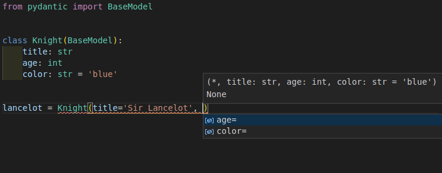
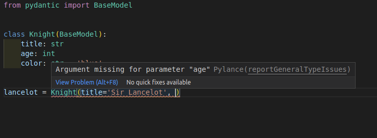
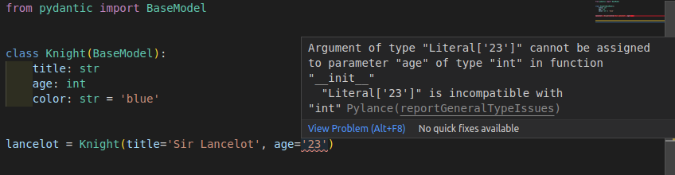

Visual Studio Code
Warning
本サイトのドキュメントは、Pydanticの日本語翻訳の私家版です。
内容に不審な点がある場合は、Pydanticのドキュメントを確認してください。
翻訳に使用したPydanticのバージョンは、v2.8.2になります。
Pydanticは、標準のPython型アノテーションの上に作られているので、どんなエディタやIDEでもすぐに使えます。
Visual Studio Code(VS Code)を使用すると、PyCharm pluginで提供されているものに匹敵する、いくつかの追加のエディタの機能がサポートされます。
これは、新しいPydanticモデルインスタンスを作成している間でも、型と必要な引数のオートコンプリート(または"IntelliSense")とエラーチェックができることを意味します。

Configure VS Code¶
これらの機能を利用するには、推奨される設定を使用してVS Codeを正しく設定する必要があります。
異なる構成を使用している場合は、ここで手順の概要を簡単に説明します。
Install Pylance¶
VS Codeには、Pylanceエクステンションを使用する必要があります。これは、Python用の推奨される次世代の公式VS Codeプラグインです。
PylanceはデフォルトでPython Extension for VS Codeの一部としてインストールされているため、おそらく正常に動作するはずです。それ以外の場合は、エディタでインストールされて有効になっていることを再確認できます。
Configure your environment¶
次に、エディタがPythonプロジェクトのPython environment(おそらく仮想環境)を認識していることを確認する必要があります。
これは、Pydanticをインストールした環境です。
Configure Pylance¶
デフォルトの構成では、オートコンプリートがサポートされますが、Pylanceは型エラーをチェックしない可能性があります。
Pylanceからタイプエラーチェックを有効にするには、次の手順に従います。
- "User Settings"を開きます。
Type Checking Modeを検索Python'Analysis:Type Checking Modeにオプションがあります。basicまたはstrictに設定します(デフォルトではoff)

新しいPydanticモデルインスタンスを作成するときにオートコンプリートが得られるだけでなく、必要な引数のエラーチェックもできるようになりました。

また、無効なデータ型のエラーチェックも行われます。
Technical Details
PylanceはVS Codeエクステンションであり、クローズドソースですが、無料で使用できる。そのもとで、PylanceはPyrightと呼ばれるオープンソースツール(これもMicrosoftから)を使用しており、大変な作業を行っています。
詳細については、Pylance Frequently Asked Questionsを参照してください。
Configure mypy¶
また、VS Codeでmypyを設定して、エディタ内で(Pylanceの代わりに/追加として)mypyのエラーチェックをインラインで行うこともできます。
Pydantic mypy pluginが設定されていれば、それによって検出されたエラーも含まれます。
VS Codeでmypyを有効にするには、次のようにします。
- "User Settings"を開きます。
Mypy Enabledを検索してくださいPython'Linting:Mypy Enabledにオプションがあります。- チェックボックスをオンにします(デフォルトではオフになっています)。

Tips and tricks¶
ここでは、PydanticでVSコードを使用する際の開発者エクスペリエンスを向上させるためのヒントとコツをいくつか紹介します。
Strict errors¶
この追加のエディタサポートが機能する方法は、PylanceがPydanticモデルをあたかもPythonの純粋な"データクラス"であるかのように扱うことです。
また、新しいPydanticモデルインスタンスを作成するときに、引数で渡されるデータ型について厳密な型エラーチェックが表示されます。
この例では、'23'のstrが引数ageに対して有効なintではないことを示しています。

It would expect age=23 instead of age='23'.
それにもかかわらず、Pydanticの設計と主な特徴の1つは、データ型に対して非常に寛大であることです。
実際には、値が'23'のstrを受け入れ、値が23のintに変換します。
これらの厳密なエラーチェックは、ほとんどの場合非常に有用であり、多くのバグを早期に検出するのに役立ちます。しかし、age='23'のように、"誤検出"エラーを報告することで不便になる場合もあります。
上の例のage='23'は、エラーと型の違いを示すために意図的に単純になっています。
しかし、これらの厳密なエラーが不便であるより一般的なケースは、datetimeフィールドのint値やPydanticサブモデルのdict値のような、より洗練されたデータ型を使用する場合です。
たとえば、次の例はPydanticに有効です。
from pydantic import BaseModel
class Knight(BaseModel):
title: str
age: int
color: str = 'blue'
class Quest(BaseModel):
title: str
knight: Knight
quest = Quest(
title='To seek the Holy Grail', knight={'title': 'Sir Lancelot', 'age': 23}
)
フィールドknightの型はクラスKnight(Pydanticモデル)で宣言され、コードは代わりにリテラルdictを渡しています。これはPydanticでも有効で、dictは自動的にKnightインスタンスに変換されます。
それにもかかわらず、型エラーとして検出されます。

このような場合、特定の場所での厳密なエラーを無効にしたり無視したりする方法がいくつかありますが、コードの残りの部分ではそのまま保持されます。
これを実現するためのいくつかのテクニックを以下に示します。
Disable type checks in a line¶
次のコメントを使用して、特定の行のエラーを無効にできます。
# type: ignore
または(pylance/pyrightに固有):
# pyright: ignore
(pyrightはPylanceで使用されている言語サーバーです。
age='23'の例に戻ると、次のようになります。
from pydantic import BaseModel
class Knight(BaseModel):
title: str
age: int
color: str = 'blue'
lancelot = Knight(title='Sir Lancelot', age='23') # pyright: ignore
そうすれば、Pylanceとmypyはその行のエラーを無視します。
長所: その行のエラーを削除するための簡単な変更です。
短所: 型チェック、引数のスペルミス、必要な引数が指定されていないなど、その行のその他のエラーも省略されます。
Override the type of a variable¶
使用したい値を持つ変数を作成し、その型をAnyで明示的に宣言することもできます。
from typing import Any
from pydantic import BaseModel
class Knight(BaseModel):
title: str
age: int
color: str = 'blue'
age_str: Any = '23'
lancelot = Knight(title='Sir Lancelot', age=age_str)
そうすれば、Pylanceとmypyは変数age_strを、その型を知らないかのように解釈します。intが予期されていたときに、変数がstr型であることを知る(そして対応するエラーを表示する)のではありません。
長所: エラーは特定の値に対してのみ無視され、その他の引数に対しては追加のエラーが表示されます。
短所: エラーを無視する必要がある引数ごとに、Anyと新しい変数を新しい行にインポートする必要があります。
Override the type of a value with cast¶
前の例と同じ考え方をcast()を使って同じ行に置くことができます。
このようにして、別の変数を必要とせずに、値の型宣言がインラインでオーバーライドされます。
from typing import Any, cast
from pydantic import BaseModel
class Knight(BaseModel):
title: str
age: int
color: str = 'blue'
lancelot = Knight(title='Sir Lancelot', age=cast(Any, '23'))
cast(Any, '23')は値に影響せず、ただの'23'ですが、PylanceとmypyはそれがAny型であると仮定します。つまり、値の型を知らないかのように動作します。
つまり、これは前の例と同じですが、変数が追加されていません。
長所: エラーは特定の値に対してのみ無視され、その他の引数に対しては追加のエラーが表示されます。追加の変数は必要ありません。
短所: Anyとcastをインポートする必要があり、cast()の使用に慣れていないと、最初は奇妙に思えるかもしれません。
Config in class arguments¶
Pydanticには豊富なModel Configurationsが用意されています。
これらの設定は、各モデルの内部class Configで設定できます。
from pydantic import BaseModel
class Knight(BaseModel):
model_config = dict(frozen=True)
title: str
age: int
color: str = 'blue'
または、モデルクラスを定義するときにキーワード引数として渡されます。
from pydantic import BaseModel
class Knight(BaseModel, frozen=True):
title: str
age: int
color: str = 'blue'
特定の設定frozen(ベータ版)には特別な意味があります。
一度作成されたモデルインスタンスを他のコードが変更するのを防ぎ、"frozen"されたままにします。
2番目のバージョンを使用してfrozen=True(クラス定義でキーワード引数を使用)を宣言すると、Pylanceはコードをチェックインし、"frozen"のモデルに値を設定しようとしたときにエラーを検出するのに役立ちます。

Adding a default with Field¶
Pylance/pyrightでは、フィールドがオプションであることを推測するために、defaultをFieldのキーワード引数にする必要があります。
from pydantic import BaseModel, Field
class Knight(BaseModel):
title: str = Field(default='Sir Lancelot') # this is okay
age: int = Field(
23
) # this works fine at runtime but will case an error for pyright
lance = Knight() # error: Argument missing for parameter "age"
これはデータクラス変換の制限であり、pydanticでは修正できません。
Technical Details¶
Warning
Pydanticユーザーであれば、以下の詳細は必要ありません。このセクションの残りの部分は自由にスキップしてください。
これらの詳細は、他のライブラリ作成者などにとってのみ有用である。
この追加のエディタサポートは、Dataclass Transform(PEP 681)の提案されたドラフト標準を実装することによって機能する。
提案されたドラフト標準は、オープンソースパッケージPyright(PylanceがVS Codeでパイソンサポートを提供するために使用している)の同じ著者であるMicrosoftチームのEric Trautによって書かれています。
この標準の意図は、Pydanticやその他のライブラリが、エディタやツールに対して、それら(エディタ)がこれらのライブラリ(例えばPydantic)をあたかも"データクラス"であるかのように扱うべきであることを伝え、オートコンプリートや型チェックなどを提供する方法を提供することです。
ドラフト標準には、Alternate Formも含まれており、Pydanticなどのアーリーアダプタが、新しいドラフト標準が完成して承認される前であっても、すぐにサポートを追加できるようになっています。
Alternate Formを含むこの新しいドラフト標準は、すでにPyrightでサポートされているため、VS CodeのPylanceを介して使用できます。
Pythonの公式標準として提案されているので、他のエディタも簡単にサポートを追加できます。
また、Pydanticに似た他のライブラリーの作成者も、("Alternate Form"を使用して)この標準をすぐに簡単に採用し、これらの追加エディター機能の利点を得ることができます。